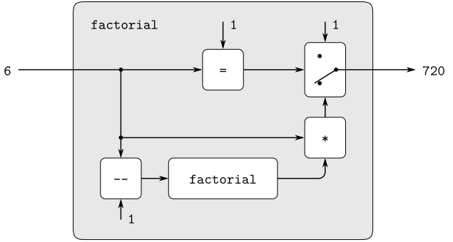
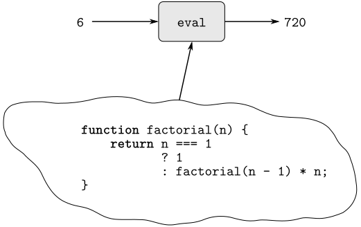

function factorial(n) {
return n === 1
? 1
: factorial(n - 1) * n;
}


eval("5 * 5;");
evaluate(parse("5 * 5;"), the_global_environment);
halton a if evaluating the expression f(a) returns a value (as opposed to terminating with an error message or running forever). Show that it is impossible to write a function halts that correctly determines whether f halts on a for any function f and object a. Use the following reasoning: If you had such a function halts, you could implement the following program:
function run_forever() { return run_forever(); }
function strange(f) {
return halts(f, f)
? run_forever()
: "halted";
}what can in principle be computed(ignoring practicalities of time and memory required) is independent of the language or the computer, and instead reflects an underlying notion of computability. This was first demonstrated in a clear way by Alan M. Turing (1912–1954), whose 1936 paper laid the foundations for theoretical computer science. In the paper, Turing presented a simple computational model—now known as a Turing machine—and argued that any
effective processcan be formulated as a program for such a machine. (This argument is known as the Church–Turing thesis.) Turing then implemented a universal machine, i.e., a Turing machine that behaves as an evaluator for Turing-machine programs. He used this framework to demonstrate that there are well-posed problems that cannot be computed by Turing machines (see exercise 4.15), and so by implication cannot be formulated as
effective processes.Turing went on to make fundamental contributions to practical computer science as well. For example, he invented the idea of structuring programs using general-purpose subroutines. See